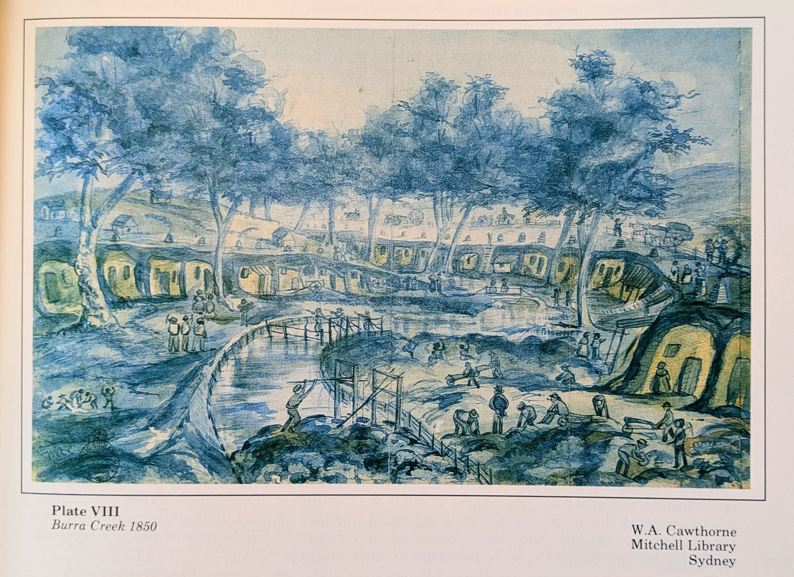

Creek Street: Life and Death in the Burra Dugouts
When the copper rush brought thousands to Burra, many miners could not afford cottages. They dug their homes into the banks of Burra Creek — creating a subterranean street of over 1,500 residents. This is the story of Creek Street, its people, and the floods that ended it.

Contents
The copper rush and a shortage of shelter
When the Burra Burra copper mine opened in 1845, it triggered one of the great mineral rushes of colonial Australia. Within months, the population of the remote site — on Ngadjuri Country, 160 km north of Adelaide — surged past 2,000 and kept climbing. The South Australian Mining Association (SAMA), which held the lease, expected miners to find their own accommodation. But there were no houses, no timber, and building materials had to be hauled 160 km from Adelaide by bullock dray at enormous expense.
The mine itself employed over 1,000 men and boys by the late 1840s, but the townships that sprang up around the workings — Kooringa, Redruth, Aberdeen, Charleston, and others — could not keep pace. Many miners arrived with little more than their tools. Cottages of stone were built for those who could afford them, but for the poorest — especially the Cornish and Welsh families who had sailed across the world on the promise of wages — something cheaper and faster was needed.
The answer was already in the ground. The banks of Burra Creek, which wound through the valley between the mine workings and the growing townships, were soft enough to dig into with picks and shovels. Within months of the mine's opening, miners began carving dwellings directly into the creek's sandy banks.
"A perfect street": the making of Creek Street
What began as a scattering of improvised shelters quickly became something more organised. By 1850, the observer William Cawthorne described what he saw in the creek bank as "a perfect street, with above 1500 residents" — a subterranean settlement extending for perhaps half a kilometre along the watercourse. The main line of dugouts became known as Creek Street, a name that appeared on survey maps and in the writings of visitors and officials.
The National Trust confirms that "the main line of dugouts was known as Creek Street," running along the section of Burra Creek near present-day Blyth Street, in the town of Kooringa. The dugouts were not rough caves but properly fashioned dwellings, with walls and floors smoothed, doorways framed, and interiors partitioned into rooms. A Conservation Study later recorded their form in detail.
At its peak, Creek Street was home to at least 1,500 people — men, women, and children — making it one of the largest concentrated populations in the colony outside Adelaide. It was a community complete with its own social hierarchies, neighbourly disputes, births, deaths, and celebrations, all conducted in a street that happened to be underground.
Life underground
Contemporary accounts describe the dugouts with a mixture of fascination and unease. They were, by all reports, remarkably comfortable. Dug into the creek's sandstone banks, the interiors were insulated from the extremes of South Australian weather — warm in winter and cool in summer. Some were spacious: the obituary of an early settler describes dugouts with "large rooms, nicely whitewashed," fireplaces, and shelves cut directly into the earth.
Many residents took pride in their underground homes, lining the walls with fabric or whitewashing them, and furnishing them with tables, chairs, and beds. Visitors to Burra often remarked on the incongruity of well-dressed families emerging from holes in the ground. But these were practical dwellings for a place where shelter was urgent and materials were scarce. As one observer noted, the creek-bank residents were rent-free — a significant advantage when mine wages were paid monthly and prices in the monopoly stores were high.
The dugouts were not without their hazards. The creek was prone to flash flooding after rain, and the sandy banks could collapse. Ventilation was poor, and the close proximity of so many dwellings — packed along a narrow watercourse — meant that disease could spread quickly. But for nearly a decade, Creek Street was home to a large part of Burra's working population, and it shaped the town's character as a place of improvisation and endurance.
Several family history records on this site mention ancestors who lived in the dugouts. John Vanstone and his family "lived in Burra dugouts and lost everything in the floods" before returning to Willunga. James Hinch, an Irish ex-convict, was living in a dugout in 1851. Another settler recalled living in "the historical dugouts in the bank of the creek" until he could afford a brick house in Redruth — he later sold his creek residence for three pounds, "and shortly afterwards all the huts were washed out."
Flour-barrel chimneys and Mrs Nankervis
Among the most vivid details of Creek Street life is the matter of the flour-barrel chimneys. The dugouts were dug horizontally into the bank, with a doorway opening onto the creek bed. To ventilate a fireplace, a shaft was bored upward through the earth to the surface — but the sandy soil made it difficult to construct a proper chimney stack. Miners solved the problem by embedding wooden flour barrels vertically in the shaft, creating a serviceable flue.
These barrel chimneys became a distinctive feature of the Creek Street skyline — low wooden tubes protruding from the grassy bank above the dugout doors. They were practical but imperfect. The 1898 reminiscence of William Copley MP, later published in the SA Department of Environment and Heritage conservation study, recalled that residents capped the barrels with casks to stop nocturnal travellers stumbling into the chimney openings. Cawthorne and others record that a man walking home from the pub one night fell through the top of a barrel chimney and landed — to the alarm of the household — in Mrs Nankervis's kitchen fireplace.
It is a story that captures both the ingenuity and the precariousness of creek-bank life: a community so dense that you could fall through someone's chimney on your way home.
The floods of 1851
The great weakness of Creek Street was always the creek itself. Burra Creek, dry for much of the year, could become a torrent within hours of heavy rain in the ranges to the north. In 1851, two devastating floods swept down the watercourse and through the dugouts.
The floods were catastrophic. Contemporary newspaper reports describe more than 80 huts destroyed, furniture floating down the creek, and families fleeing in the dark as water poured through their front doors. One man dived back into the flood to recover a bag containing £100 — his life savings — and barely escaped alive. Children were carried to higher ground by neighbours wading through waist-deep water, and the community on the hillside above the creek spent the following days digging through the mud to recover belongings.
The Australasian Mining History Association (AMHA) conference proceedings, held in Burra in 2022, confirm that SAMA prohibited dugout occupation after the "catastrophic storms in June 1851." The company refused to hire anyone living in the creek bank — a policy that effectively ended new dugout construction. But it did not immediately clear Creek Street. Some families, unable to afford alternative housing, remained in the remaining dugouts for years afterwards, and some were still living there as late as 1860.
SAMA's refusal of flood relief
When the floodwaters receded in 1851, the residents of Creek Street faced the loss of their homes and possessions with no insurance, no savings, and no alternative housing. They turned to SAMA for help. The South Australian Mining Association was, after all, the reason they were there — the company had drawn thousands to a remote valley where no other employment existed, and had taken no responsibility for housing them.
SAMA refused. The company would not offer flood relief to the dugout residents, nor would it assist with rehousing. The official position was that the residents had no right to be there — they were squatters on the company's mineral lease — and that the risk of flooding was theirs to bear. It was a harsh decision, and one that speaks to the power imbalance between the company and its workforce in early colonial mining towns.
Some families moved into Paxton Square, the cottages built by the company as charitable housing — but Paxton Square had only a limited number of units, and many former Creek Street residents simply left Burra altogether. The Vanstone family returned to Willunga. Others drifted to the Victorian goldfields. The community that had been 1,500 strong began to disperse.
The flood of 1859 and the last residents
Despite SAMA's prohibition, a small number of families continued to live in the surviving dugouts through the 1850s. They were the poorest and the most stubborn — those who had no savings to move, or who found the rent-free creek-bank dwellings preferable to paying for a cottage. The 1850s saw occasional minor flooding, but the dugouts that survived 1851 were, for a time, spared.
That changed in 1859. A great flood — recorded in the SA Department of Environment and Heritage conservation study — swept through the remaining dugouts and finally expelled the last residents. By 1860, the creek bank was abandoned as a place of habitation. The era of Creek Street was over.
Burra Creek itself continued to flood periodically, and the sandy banks continued to erode. The dugouts collapsed, filled with silt, and were gradually overtaken by vegetation. Within a generation, Creek Street — once home to 1,500 people — had largely disappeared from view. It survived only in photographs, in the memories of old residents, and in the few sections of bank where the outlines of doorways and rooms could still be traced.
The surviving dugouts
Today, a small number of the original Creek Street dugouts survive. The National Trust manages the site, which it describes as containing three surviving dugouts in an unflooded tributary of Burra Creek near Blyth Street. These remnants — doorway openings, partial walls, and the depressions where rooms once stood — are among the last physical evidence of one of colonial Australia's most remarkable working-class communities.
The surviving dugouts have been partly restored and stabilised, and the site is open to visitors as part of the Burra Heritage Passport. They offer a rare opportunity to see the scale and method of creek-bank dwelling construction: the depth of the rooms, the smoothness of the carved walls, and the proximity of the dwellings to the watercourse that was both their reason for being and their ultimate undoing.
For more information on the dugouts as a place to visit, see the Miners' Dugouts page in the Places section of this site. The broader story of Burra's townships and their development is told in the Townships Map, where the Kooringa section includes a detailed survey map of the dugouts area.
Sources and further reading
This article draws on primary and secondary sources, including several held in the Ian Auhl History Room at the Burra Community Library.
On this site
- The Mine — copper discovery, timeline, and industry
- Miners' Dugouts — visiting information for the surviving dugouts
- Townships around Burra — interactive map and survey descriptions, including a detailed survey map of the dugouts area
- Kooringa — the township nearest to Creek Street
- Paxton Square — the charitable cottages built after the floods
- Notable People — biographical records mentioning dugout residents
- Family Research — Vanstone, Hinch, and other family histories referencing the dugouts
- Conservation Studies — including the Burra Creek Dwellers Dugouts Conservation Study (Austral Archaeology Pty Ltd)
External sources
- National Trust of South Australia — Burra Miners' Dugouts: historical overview, visitor information, and the statement that three dugouts survive
- SA Department of Environment and Heritage — Burra Creek Dwellers Dugouts Conservation Study: includes the 1859 flood record, SAMA's refusal of flood relief, and William Copley MP's 1898 reminiscence of flour-barrel chimneys
- Australasian Mining History Association (AMHA) — 2022 Burra Conference Proceedings: confirms SAMA's prohibition on dugout occupation after June 1851, and Cawthorne's 1850 description of "a perfect street, with above 1500 residents"
- Wikipedia — Burra, South Australia: general historical overview
- Wikipedia — South Australian Mining Association: company history and labour practices
Print sources
- Auhl, Ian, The Story of the Monster Mine: The Burra Burra Mine and Its Townships 1845–1877, Investigator Press, Adelaide, 1986
- Auhl, Ian, Burra Burra Reminiscences of the Burra Mine and Its Townships, Adelaide, 1975
- Carter, Jennifer, Burra 1845–1851: A Directory of Early Folk, 1996
- Austral Archaeology Pty Ltd, Burra Creek Dwellers Dugouts Conservation Study
Feature articles are researched and written by the Burra History Group. If you have information, photographs, or family stories about Creek Street or the Burra dugouts, please get in touch.